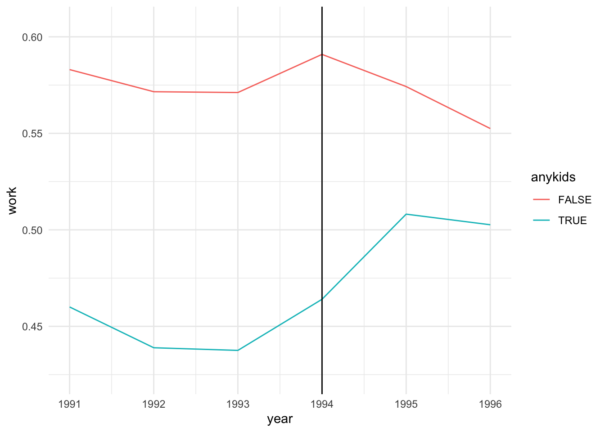

This post recreates this post with proper formatting, syntax highlighting, etc.
library(tidyverse)
── Attaching core tidyverse packages ──────────────────────── tidyverse 2.0.0 ──
✔ dplyr 1.1.2 ✔ readr 2.1.4
✔ forcats 1.0.0 ✔ stringr 1.5.0
✔ ggplot2 3.4.2 ✔ tibble 3.2.1
✔ lubridate 1.9.2 ✔ tidyr 1.3.0
✔ purrr 1.0.2
── Conflicts ────────────────────────────────────────── tidyverse_conflicts() ──
✖ dplyr::filter() masks stats::filter()
✖ dplyr::lag() masks stats::lag()
ℹ Use the conflicted package (<http://conflicted.r-lib.org/>) to force all conflicts to become errors
library(skimr)
First we’ll load the data (download if necessary). I just started playing around with skimr::skim() to generate nice summaries. (digits doesn’t seem to do anything, though?)
Following the old post, we need to construct dummy variables for (a) before-and-after the EITC takes effect in 1994 and (b) the treatment group (1 or more children). We’ll keep these as logicals (rather than the numerics in the old post).
dataf = dataf %>%mutate(post93 = year >=1994, anykids = children >=1)
The “difference-in-differences coefficient” is \[\delta_1\], which indicates how the effect of kids changed after the EITC went into effect. Let’s take a second to plot this.
ggplot(dataf, aes(post93, work, color = anykids)) +geom_jitter() +theme_minimal()
Okay, so the scatterplot version, like, isn’t perspicuous. How about the un-dummied variables, and just the mean?
No summary function supplied, defaulting to `mean_se()`

The parallel trends assumption looks good, at least qualitatively. (Remember this only applies prior to the intervention.) However, the parallel trends are nonlinear, which maybe is why the example uses the dummied variable.
Anyway, on to the regression. Which, hey, is a linear probability model because econometricians are funny like that.
model =lm(work ~ anykids*post93, data = dataf)summary(model)
Call:
lm(formula = work ~ anykids * post93, data = dataf)
Residuals:
Min 1Q Median 3Q Max
-0.5755 -0.4908 0.4245 0.5092 0.5540
Coefficients:
Estimate Std. Error t value Pr(>|t|)
(Intercept) 0.575460 0.008845 65.060 < 2e-16 ***
anykidsTRUE -0.129498 0.011676 -11.091 < 2e-16 ***
post93TRUE -0.002074 0.012931 -0.160 0.87261
anykidsTRUE:post93TRUE 0.046873 0.017158 2.732 0.00631 **
---
Signif. codes: 0 '***' 0.001 '**' 0.01 '*' 0.05 '.' 0.1 ' ' 1
Residual standard error: 0.4967 on 13742 degrees of freedom
Multiple R-squared: 0.0126, Adjusted R-squared: 0.01238
F-statistic: 58.45 on 3 and 13742 DF, p-value: < 2.2e-16
This indicates that the EITC increased work (workforce participation? whether someone was employed?) by 5% among families with at least 1 child. In the second plot, the blue line goes from about 45% prior to 1994 to about 50% afterwards.